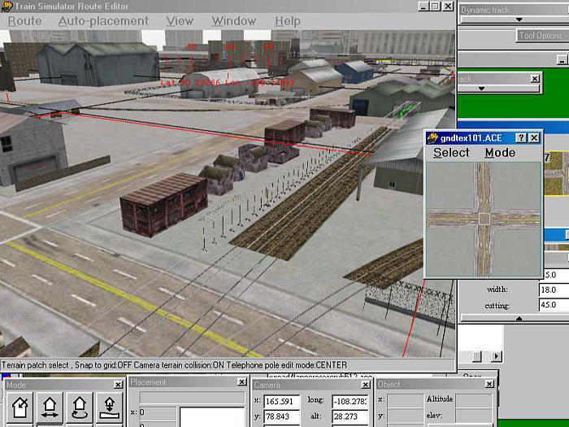
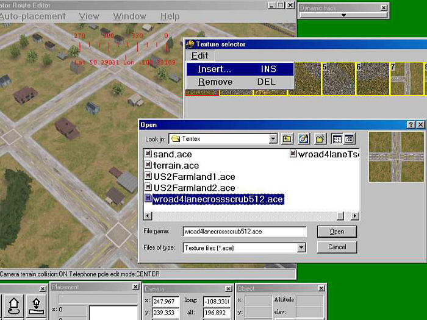

Changing Textures in your Route
by Jim "sniper297" Ward
Overview
Question
How do you change the ground textures in your route to one of the other textures?
Answer
First thing you need is to know what goes where, and why. Read this tutorial: Route Folder Structure & Packaging a Route.
Terrain textures are in the \Terrtex folder for each route, and every texture has to have a corresponding name in the \Terrtex\Snow folder so the route won't crash when you drive it in snow. When you extract a new route, you only get two - terrain.ace and microtex.ace. So open one of the existing routes in the route editor, and look around for terrain textures you like. Use the "texture" window, click on the terrain button, and when you select a file it will tell you the file name.

Write that down, then go to the \Terrtex and \Terrtex\Snow folders for that route, and copy the ace files from there into your route's \Terrtex and \Terrtex\Snow folders. Opening your route in the RE, bring up the "texture select" window, click edit, insert, scroll thru until you get the one you want.

You need to "paint" at least one tile in that area before it will stick, and you can change a bunch at a time by clicking on one tile, then hold down the shift key and click on another as far as you can reach, that multiple selects all the tiles between. Now when you hit the number key for the texture you want it will paint all those tiles.
If you have enough disk space you can copy all the \Terrtex from all the routes, and use Route Riter to clean up the ones you didn't use when you're done.
Here's a tool for copying everything:"Get Stuffed! - Adding All MSTS Objects to Your New Route"